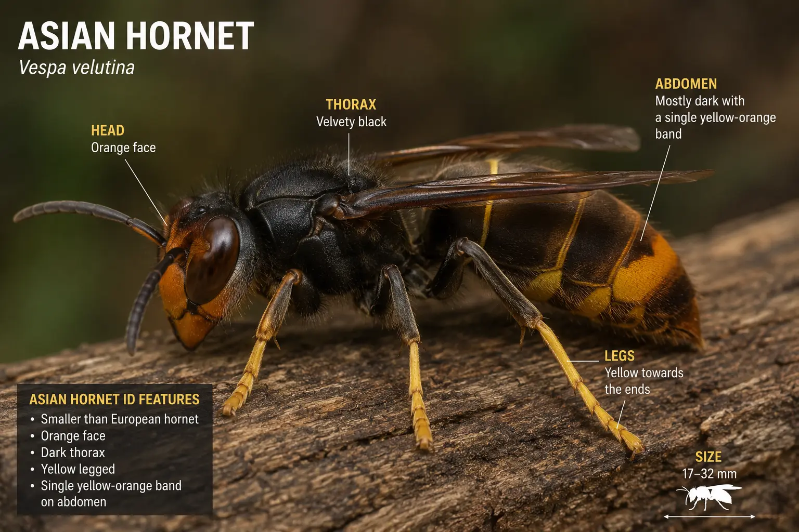
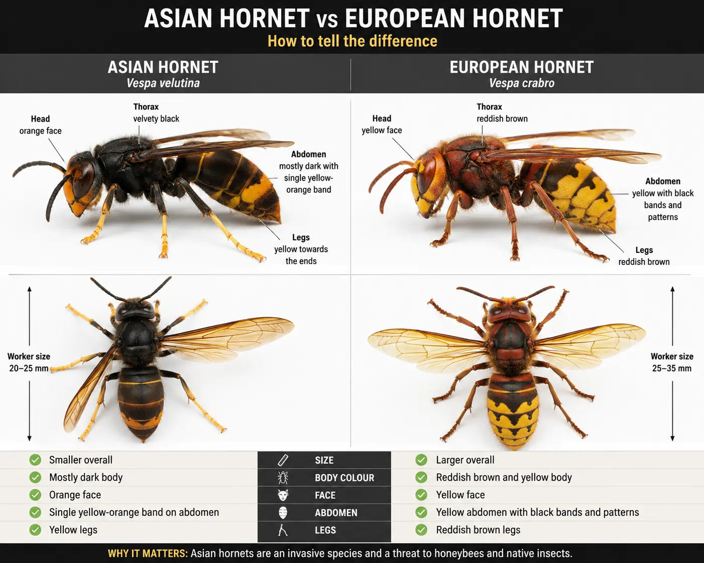

Yellow-legged hornet guide
Asian Hornet (UK) – Identification, Risk and What To Do
Last updated: 15 August 2026

The Asian hornet, more accurately called the yellow-legged hornet, is an invasive non-native hornet that preys on honey bees and other insects. Its scientific name is Vespa velutina. It is not the same as the larger native European hornet, which is part of the UK’s natural wildlife.
For beekeepers, the main concern is predation at hive entrances. Asian hornets can hover outside colonies and catch returning foragers, reducing flying activity and putting pressure on colonies that are already weak, stressed or short of bees. This can also be confused with other bee pests, wasp activity around beehives or wider hive problems.
Early identification and rapid reporting are essential. Beekeepers should not attempt to destroy nests themselves. A suspected sighting should be photographed if safe, recorded with the location, and reported through official UK routes.
Key identification features
Asian hornets are often described as having a dark, almost black body, a single orange or yellow band near the end of the abdomen, and distinctive yellow tips to the legs. These yellow leg tips are why the species is often called the yellow-legged hornet.
They are generally smaller and darker than the native European hornet. At a hive entrance, they may be seen hovering steadily, waiting to catch honey bees as they return from foraging.
Suspected identification should be based on a combination of features rather than one detail alone. Many native insects can be confused with Asian hornets, including European hornets, queen wasps, hoverflies and other large flying insects.
Asian hornet vs European hornet

The native European hornet is usually larger, has more yellow and brown colouring, and is not normally a major threat to healthy honey bee colonies. It may occasionally take bees, but it is part of the natural UK ecosystem and should not be confused with the invasive Asian hornet.
The Asian hornet is darker overall, with a black or dark brown thorax, yellow leg tips and a clear orange or yellow band on the abdomen. If you are unsure, a clear photograph is usually more useful than a written description when submitting an official report.
Do not kill native hornets unnecessarily. The priority is careful observation and prompt reporting of suspected Asian hornet sightings through official channels.
Why Asian hornets are a problem for bees
Asian hornets are efficient predators. Around beehives, they may hover near the entrance and catch returning foragers. This behaviour can reduce normal flight activity, make bees reluctant to leave the hive, and place pressure on the colony during periods when it needs to gather nectar, pollen and water.
A strong colony may withstand occasional predation, but sustained pressure can be more serious. Weak colonies, small colonies, nucs and colonies already affected by poor forage, queen problems, starvation, wasps or varroa are more vulnerable.
The wider ecological concern is also important. Asian hornets prey on many insects, not just honey bees, so early detection helps protect wild pollinators as well as managed colonies.
Signs of Asian hornet activity around hives
The most obvious sign for beekeepers is a hornet hovering in front of a hive entrance and intercepting bees. This is sometimes called hawking. The hornet may hold position in the air and dart forward to catch bees as they approach the entrance.
Colonies under predator pressure may show reduced flying, nervous entrance behaviour, or bees clustering around the entrance rather than foraging normally. You may also notice dead, damaged or dismembered bees near the hive, although similar signs can also be caused by wasps, robbing or other predators.
Do not rely on hive behaviour alone. If you see a suspicious hornet, focus on getting a clear photograph and recording the location rather than trying to catch or kill it.
What to do if you see an Asian hornet
If you see a suspected Asian hornet, stay calm and keep a safe distance. Do not disturb it, do not follow it into unsafe areas, and do not attempt to destroy a nest. Nests can be dangerous and should be dealt with only by trained responders.
If it is safe, take a clear photograph from more than one angle. Try to capture the body colour, abdominal band and yellow leg tips. Note the exact location, date, time and behaviour, especially if it was seen hawking near a hive entrance.
Report the sighting as soon as possible using official channels. Speed matters because rapid reporting helps responders confirm the sighting and locate nests before they spread.
How to report an Asian hornet in the UK
If you think you have seen a yellow-legged hornet, also known as Asian hornet, report it immediately through the official UK reporting channels. A clear photograph and accurate location are the most useful details you can provide.
The main reporting route is the Asian Hornet Watch app. Suspected sightings can also be reported online through the official non-native species reporting service.
Official Reporting Routes
Official Identification & Reporting Downloads
The following resources are provided by official UK organisations and can help with identification, reporting and nest recognition.
- Yellow-legged Hornet Identification Guide (PDF)
- Yellow-legged Hornet Alert Poster (PDF)
- Yellow-legged Hornet Nest Identification Guide (PDF)
- Yellow-legged Hornet Reporting Card (PDF)
Should you try to trap Asian hornets?
Trapping needs care because poorly chosen traps can kill many non-target insects, including native wasps, flies and other pollinators. For most beekeepers, the priority should be monitoring, identification and reporting rather than widespread casual trapping.
If official local guidance recommends monitoring traps or bait stations in your area, follow that guidance carefully and check traps frequently. Do not set indiscriminate traps and leave them unattended.
A confirmed sighting is more useful when it leads to nest tracking and official response. Random trapping without reporting can delay the action that is actually needed.
How to protect your hives
Regular entrance observation is one of the best habits a beekeeper can develop. Spend a few minutes watching the entrance during the active season and look for unusual hovering predators, reduced flight or bees reluctant to leave the hive.
Keep colonies as strong and healthy as possible. A well-managed colony with adequate stores, a laying queen and good disease control is better placed to cope with short-term predator pressure than a weak or neglected colony.
If a colony is under pressure from predators, reducing the entrance may help the bees defend the hive. This should be done carefully so ventilation and traffic are not restricted more than necessary.
Common mistakes
One common mistake is confusing the Asian hornet with the native European hornet. European hornets are larger and more yellow-brown in appearance, and they should not be destroyed simply because they are large.
Another mistake is delaying a report because the beekeeper is not completely sure. If you have a clear photograph and a reasonable suspicion, report it. Official teams can assess whether the sighting is likely to be Asian hornet or a similar native species.
The most serious mistake is trying to deal with a nest yourself. Asian hornet nests can be high, hidden and hazardous. Nest destruction should be handled through official response routes.
How HiveTag can help
Recording unusual predator activity helps you spot patterns across your apiary. If one hive shows reduced foraging, repeated hawking activity or unexplained dead bees near the entrance, notes from previous inspections can help you decide whether the problem is new or ongoing.
HiveTag can be used to log entrance observations, predator sightings, colony strength and follow-up tasks, making it easier to keep an accurate record during a busy season.
Learn more about HiveTag.
Asian Hornet FAQ
Yes. Asian hornets, also called yellow-legged hornets, have been detected in the UK. The aim is rapid reporting and response to prevent establishment.
Report suspected sightings using the Asian Hornet Watch app or the official UK Centre for Ecology and Hydrology online reporting form. Include a clear photograph and location if safe to do so.
Commonly reported features include a dark body, a single orange or yellow abdominal band, yellow-tipped legs and a generally smaller appearance than the native European hornet, although official confirmation may still be required.
No. Do not disturb a hornet or attempt to destroy a nest yourself. Report the sighting through official channels so trained responders can investigate.